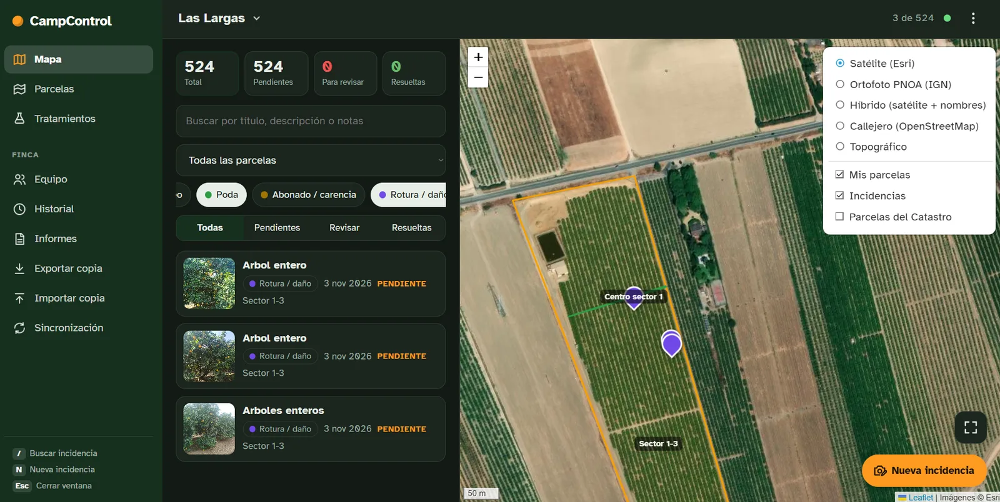
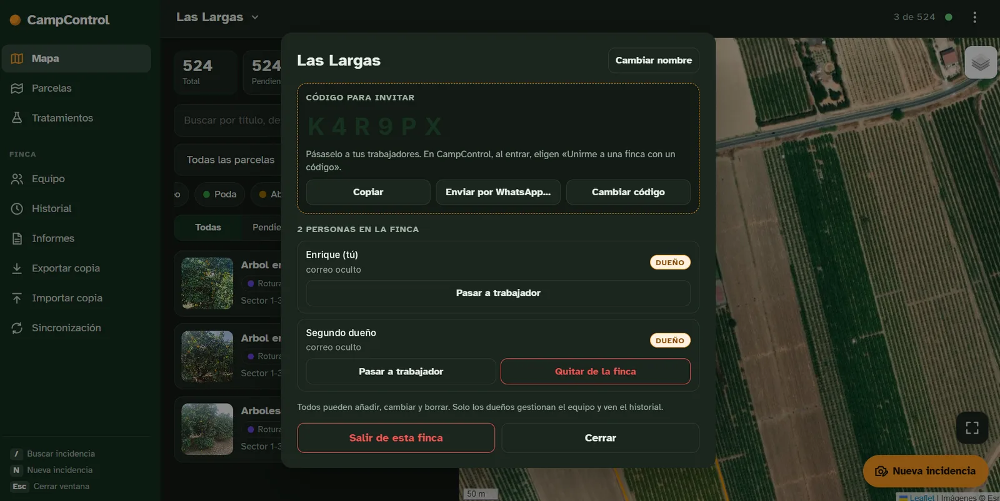
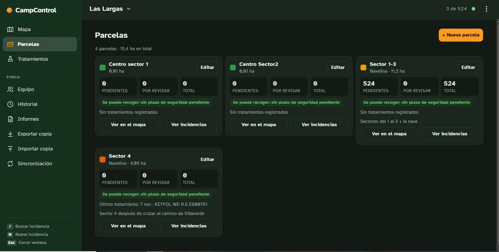

En el ordenador
La finca entera en pantalla grande
Entra con el mismo correo y contraseña de la app. Sin instalar nada, desde el navegador.
- Lista y mapa a la vezPulsa una incidencia de la lista y el mapa vuela hasta su árbol.
- Resumen de un vistazoPendientes, para revisar y resueltas, siempre arriba.
- Fotos y vídeos en grandeRevisa con calma lo que tu equipo apuntó en el campo.
- Atajos de tecladoPulsa / para buscar y N para una incidencia nueva.


Control para el dueño
Tu equipo, con su código y su historial
Invitas a tu gente con un código, decides quién es dueño y quién trabajador, y ves en el historial todo lo que se ha añadido, cambiado o borrado, quién lo hizo y cuándo.
- Lo borrado se puede recuperarDesde el historial, si alguien borra algo por error.
- Invitación con códigoTus trabajadores se unen con un código de 6 letras que puedes enviar por WhatsApp y cambiar cuando quieras.
Funciones
Más allá de las incidencias
Lo que hace falta para llevar una finca de cítricos, en la misma app.

Parcelas
Dibuja tus parcelas en el mapa y las incidencias se asignan solas.
Tratamientos
Apunta qué producto se echó, en qué parcela y cuándo.
Recorrido con el tractor
Graba la pasada y, si se acaba el producto, te guía para volver al punto exacto.
Recordatorios
Pon fecha de revisión a una incidencia y la app te avisa ese día.
Informes
Exporta incidencias y tratamientos a Excel o PDF.
Copias de seguridad
Guarda una copia completa con fotos y vídeos, y recupérala cuando quieras.
Para todo el equipo
Dueños y trabajadores, en el mismo mapa
Dueño de finca
Lleva el control de una o varias fincas.
- Crea fincas e invita a su equipo con un código
- Ve todas las incidencias, parcelas y tratamientos
- Consulta el historial y recupera lo borrado
Trabajador
Apunta lo que ve y lo marca cuando está resuelto.
- Se une a la finca con el código del dueño
- Crea incidencias con foto o vídeo
- Edita y resuelve las de todo el equipo
Empieza a usarla en tu finca
Descárgala en el móvil, crea tu finca e invita a tu equipo. Desde el ordenador lo tendrás todo a la vista.